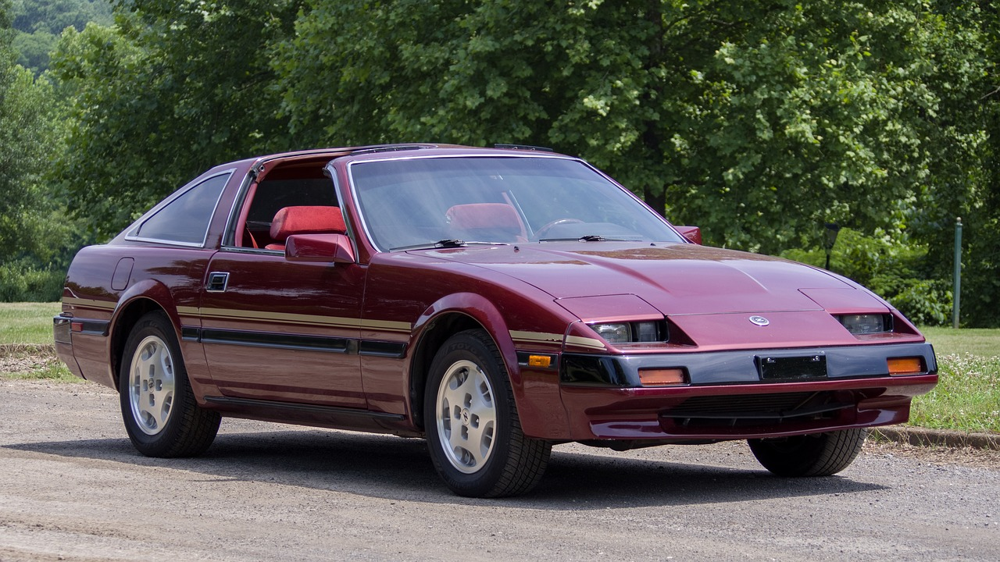

"Datsun 300ZX (Z31) 1984-1989"
Datsun's shot in the dark. The 300ZX, rocking Japan's first V6! From 1984 to 1989 this Fairlady dominated the Japanese sports touring market. This 80s daydream featured one of the earliest voice assistants, and the Z31 community dearly refers to her as "B*#!%ing Betty", as the security sensors are known to go bad and cause her to endlessly remind you to shut your door. This revolutionary car flaunted it's pop-up headlights and aggressive lines like none other.
- Z-Car wiki
- Z-Car community page